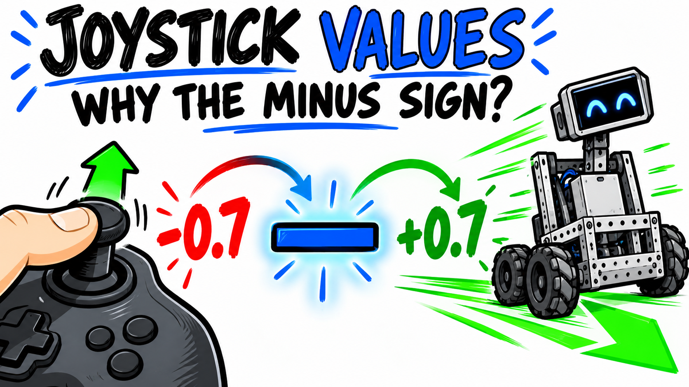

Video 5 · FTC TeleOp series
Reading the Joysticks: Values, Variables, and the Minus Sign
Understand gamepad Y values, variables, and why FTC drive code often negates the input.

POWERING ON safety sequence
- Secure the robot and confirm it is disabled.
- Look around the work area.
- Call out “POWERING ON!”
- Give everyone time to step away.
- Visually confirm the area is clear.
- Press PLAY only when it is safe.